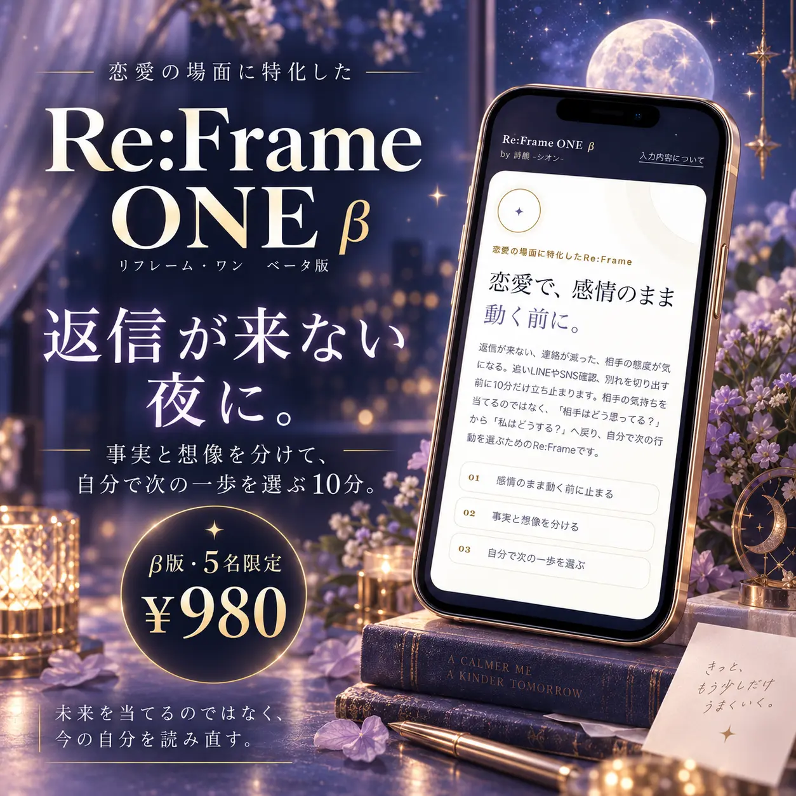
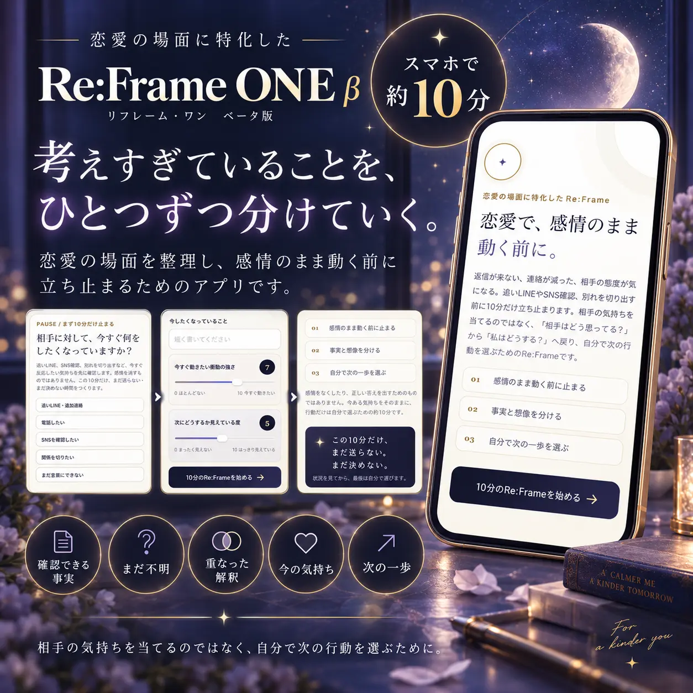
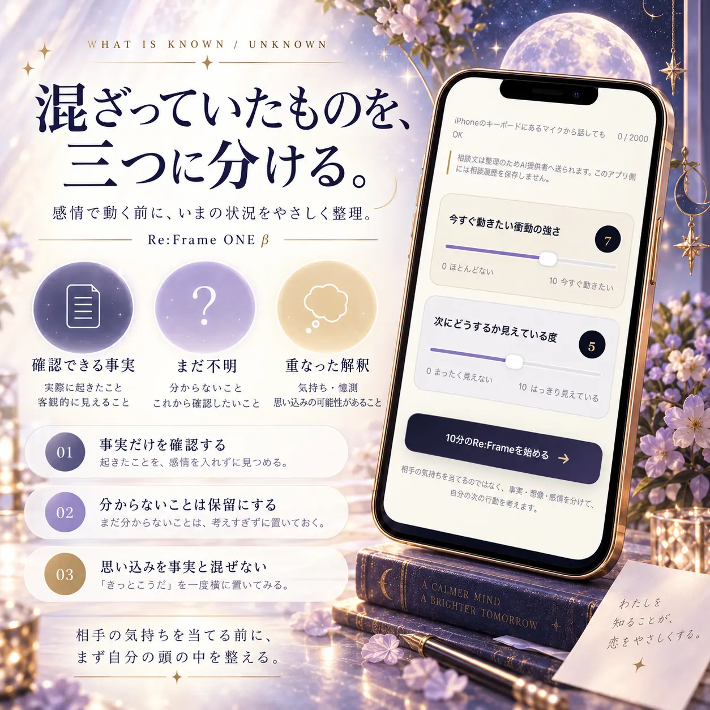
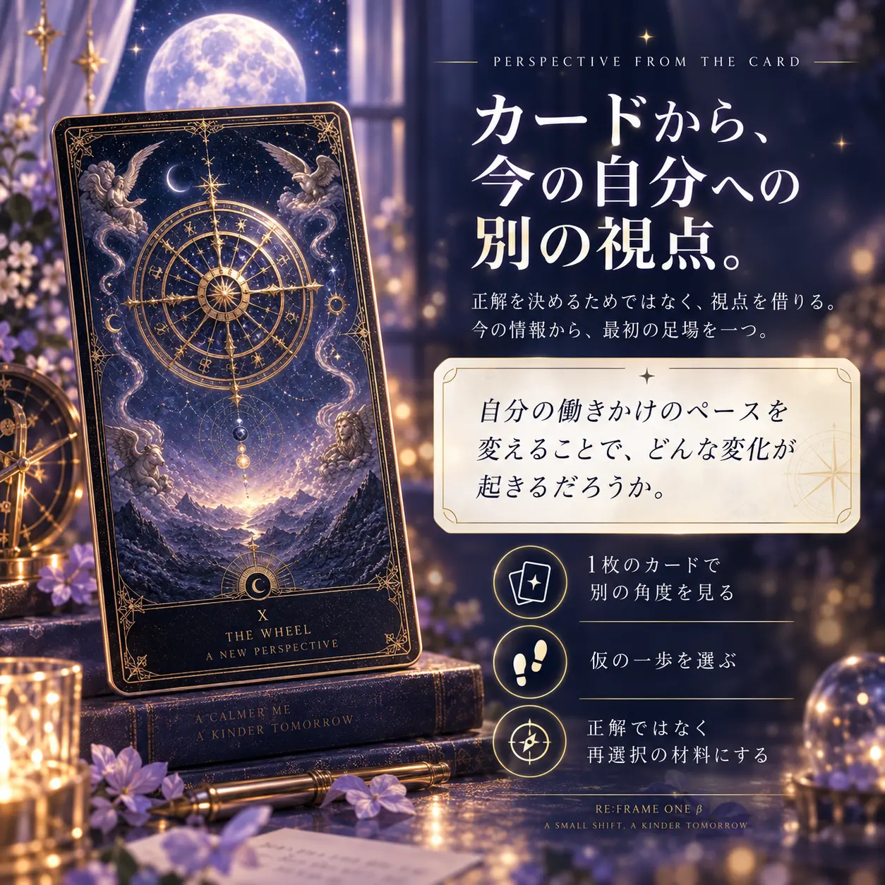

この10分だけ、まだ送らない。まだ決めない。
最初に「今すぐしたくなっていること」を選びます。追いLINE・電話・SNS確認・関係を切りたい・まだ言葉にできない・特にない、から今に近いものを選べます。
追いLINE電話SNS確認関係を切りたいまだ言葉にできない特にない
感情を消すためではなく、この10分だけ行動を保留して、状況を見てから自分で選ぶためのPAUSEです。

✦Re:Frame ONE β
返信が来ない夜、答えを追い続ける前に。
Re:Frame ONEは、恋愛で感情のまま動く前に、今すぐしたいこと・相談内容・衝動の強さ・次が見えている度を確認し、そのあと6つの画面で状況を読み直すWebアプリです。未来や相手の本心を決めつけるのではなく、最後は自分で次の一歩を選びます。
980円の一回払い。月額料金・自動更新はありません。現在はPAY.JPの審査・導入準備中です。
実際のアプリと同じ順番で、まず今の衝動と状況を確認します。
最初に「今すぐしたくなっていること」を選びます。追いLINE・電話・SNS確認・関係を切りたい・まだ言葉にできない・特にない、から今に近いものを選べます。
感情を消すためではなく、この10分だけ行動を保留して、状況を見てから自分で選ぶためのPAUSEです。


AIは相談文に書かれた内容だけを材料に、第三者が確認できる事実、今はまだ分からないこと、本人が足している意味づけを分けます。
相手の理由や本心を、分かったこととして補いません。
これはLP用に作った架空の流れではなく、現在のアプリの結果画面と同じ順番です。
現在のアプリでは、大アルカナ22枚からアプリ側で1枚を無作為に引き、その1枚だけを使います。
カードを根拠に「連絡が来る」「復縁する」「相手はこう思っている」とは扱いません。
タロットは答えではなく、固定した見方から少し離れるための「もう一つの視点」です。

PAUSE → 入力 → 6画面の整理 → 選択という順序を固定し、相手の答え探しだけで終わらないようにしています。
相手の内心、未来、復縁、連絡の有無を断定しません。AIの文章もアプリ側で品質チェックします。
仮提案をそのまま命令にせず、「今日は決めない」も含めて最終的な行動を自分で選ぶ設計です。
最後に「いつ見直すか」を選べます。さらに任意で「その間、自分は何をするか」「何が起きたら選び直すか」も残せます。
決めたことに縛られるのではなく、状況が変われば選び直せる前提です。
Re:Checkは任意です。守れたかを採点するためではなく、状況が変わった今の自分で選び直すためにあります。
Re:Checkを選ぶ場合だけ、今日の選択と数値など必要最小限をこの端末内に保存します。24時間後のRe:Checkは端末のカレンダーへ追加できます。通知先や相談本文をサーバーへ保存する仕組みではありません。
相談文は整理処理のためGoogle Gemini APIへ送信されます。実名・住所・電話番号・LINE ID・勤務先などは入力しないでください。
Re:Frame ONE側には、相談本文や回答履歴を利用者ごとに恒久保存するデータベースを設けていません。
自傷・自殺、暴力、脅迫、ストーカー等が含まれる場合は通常の整理より安全案内を優先します。
レビューを作るためではなく、実際に使ったとき「衝動のまま動く前に止まれるか」「次にどうするかが見えやすくなるか」を確かめるための有料βです。
価格は980円（税込）の一回払い。月額料金・自動更新・無料トライアルからの自動課金はありません。
カード決済はPAY.JPのCheckoutを使う準備を進めています。決済完了だけでアプリが自動解錠される仕組みではなく、決済確認後に利用URLとアクセスコードをご案内する運用です。
利用開始後の購入者都合による返金は原則お受けしません。ただし運営側の不具合や長時間の障害などで実質的に利用できなかった場合は、状況を確認して個別に対応します。
大アルカナを1枚使いますが、未来や相手の本心を当てるためではありません。事実・不明・解釈を分けたあと、別の視点を1つ増やすために使います。
選択肢のタップ、相談文の入力（iPhoneの音声入力も可）、0〜10のスライダー、結果画面の「次へ」、タロットを1枚引く操作、最後の行動選択が中心です。
自由会話ではなく、PAUSE、事実・不明・解釈、感情・願い、ランダムなタロット1枚、仮提案、最終選択という固定した流れで進みます。AIがカードを相談内容に合わせて選ぶ仕組みでもありません。
アプリ側には相談本文・回答履歴を利用者ごとに保存するDBを設けていません。Re:Checkを選ぶ場合のみ、今日の選択と数値など必要最小限が端末内に保存されます。
復縁、返信、相手の態度、相手の本心、未来の結果は保証も断定もしません。目的は「今の自分が次に何をするか」を整理することです。
不安の消失や治療を約束するサービスではありません。感情が残っていても、事実と解釈を分け、自分で次の行動を選びやすくすることを目指します。